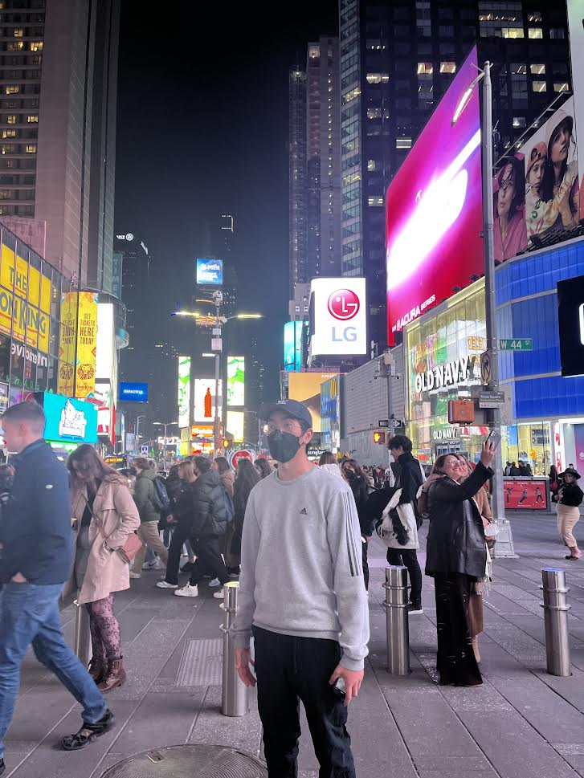
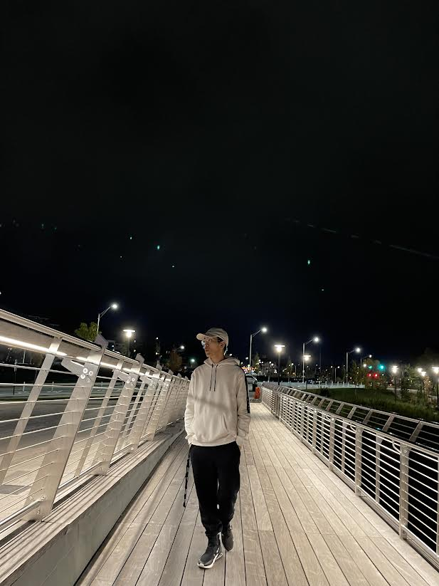

Hello, My name is Jonathan Ok. I've recently transferred to URI and chose to major in computer science because of my interest in coding.
You're probably wondering why computer science? Well, there is an app called tiktok and a lot of videos about software engineers had popped in my feed
and I just became really intrigued by the tech field. I also have other hobbies, I like to game alot. Some popular games that I play are Valorant,
Apex Legends, and League of Legends. I like taking pictures at very aesthetic places and traveling a lot. I am also athletic as well, I love playing volleyball and the setter position. I also play basketball and love watching
the NBA, my favorite player is Kyrie Irving. The way he is able to move inspires me to be able to play like him one day.



Hello, My name is Jonathan Ok. I've recently transferred to URI and chose to major in computer science because of my interest in coding. You're probably wondering why computer science? Well, there is an app called tiktok and a lot of videos about software engineers had popped in my feed and I just became really intrigued by the tech field. I also have other hobbies, I like to game alot. Some popular games that I play are Valorant, Apex Legends, and League of Legends. I like taking pictures at very aesthetic places and traveling a lot. I am also athletic as well, I love playing volleyball and the setter position. I also play basketball and love watching the NBA, my favorite player is Kyrie Irving. The way he is able to move inspires me to be able to play like him one day.